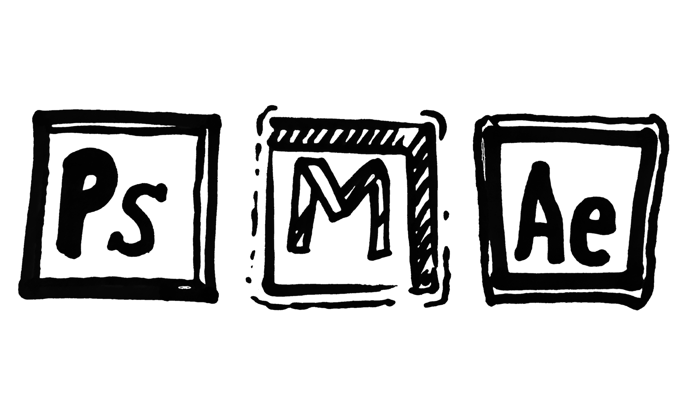

F.M.P

I am going to be producing a Bus advert, Tube advert and a Motion Graphic 20 second video. All of these are going to help "galvanise 16 to 24 year olds across the world to stand up for their right to protect themselves" and to "make carrying, and using, a condom the norm. Just like making a cup of tea or brushing your teeth."


From the examples above, there is a clear style which these adverts take. They are filled with puns, symbolisms and are all in a similar style. There is something quite sly and cheeky about the posters too. However these posters don't really dive into much of the issues of unprotected sex, other than pregenency. There is a plethora of issues, from STIs, or cultural barriers that could be explored but on the whole aren't explored.
In terms of Tube adverts, Durex hasn't made anything for the London Underground, nor have they made an advert specifically for a bus. I feel that producing these two things won't be too difficult, as the ideas I have in mind could easily work on a bus and tube advert.
Im also going to be making a 20 second motion graphics video, there are a few motion graphic/animation adverts produced by durex and I'm going to try and create one in a similar style. Im thinking something bold and colourful, and something that will connect to the target audience.
When I started out at BRIT I was only partially confident with Photoshop, and had only really used MS Paint at my old school, as software for digital design where spread thin. However, this didn’t mean I wasn’t fully prepared for the choice I made coming here. I started this course with the mindset of ‘try everything and see what I enjoy most’, and after a few months of constant experimentation I found that I enjoy the more graphic side of things, as well as animation and some 3D. Through the course of my Motion Graphics I gained the most in terms of technical skills, and had the most fun. I learned new softwares like After Effects, MAYA, and Illustrator, and became more skilled at photoshop as well as drawing on iPads with Apple Pencils. All of these skills are what allowed me to build a liking to more graphic and artsy work. I knew a fraction of what I now know from 7 units of fun and challenging units, and I feel prepared and excited for the challenge I have ahead, and I know I will finish this project with more knowledge than I started with.
The reason why I chose the Durex advert was because I feel I will do the best I can with this brief, and my skill set matches the tasks requirements the most. Im going to use my graphic/drawing skills as well as my photoshop skills to construct professional standard posters and animation.
After a lot of constant brainstorming, and a lot of thinking of which brief would be most suited to me, I chose the Durex brief due to my skill set being ideal for a brief which is mostly comprised of graphic/ motion graphic tasks. Also, I am passionate about the preservation of health of the youth, being a 16 year old myself I have more of a connection to a brief of this type. I feel I will do this brief the most justice. I have decided to make a Bus advert, Tube advert and a 20-second motion graphics video. I am really looking forward to designing something and then editing it into a real life situation, I’d like to see how my skills would look when implemented into a real life situation. The main message I’d like to get across is to make wearing condoms the norm, and to spread a social norm for carrying condoms. I would also like young people to stand up for their right to protect themselves. I feel this is very important as generally wearing condoms will prevent all negatives that can arise with unprotected sex, I don’t want to focus on specific issues such as STIs or unwanted pregnancy, instead I want all of these issues dismissed by a widespread change for more (if not all) 16-24 year olds to wear condoms, I can highlight some of the issues, but overall I don't want the main aesthetic to be the harsh imagery that comes with STIs.
I’m going to achieve this by using bold and bright colours, short simple and hopefully catchy text, simplistic design work and graphics suitable for the 16-24 demographic. I am going to design my adverts in a light hearted and fun way, but I don't want to distract from the real issues that do exist. Also, to fully achieve my goal I’m going to need to make use of softwares such as Photoshop, and Illustrator, and also After Effects for the animation. Lastly, the main thing that will make my project a success is going to be the time and effort I put into it.
I will evaluate my work through peer assessment, both as an ongoing activity and also for a final assessment. I really like using peer assessment as I’m surrounded by people with their own unique opinions and insights on what I can do to improve my work. It is easy to do this for my final evaluation, and also for any work that I need an extra mind to find the best outcome. I can also ask my teachers for any advice on things, this is usually very helpful.
| Action What needs to be completed |
Outcome What will be produced |
Milestone Deadline Date for task |
|---|---|---|
Project Launch |
Choosing briefs, Looking at past examples, Understanding the criteria, Making your new website, |
Week 1-2 |
| Project Proposals |
I have been assigned an individual tutor to help with the completion of this task, and Designed a document completed in InDesign, I have chosen to make my own website and put it on here instead. 5th April deadline |
Week 3 |
| Task 1 - Research Task 2 - Planning |
Understanding the context of your project and demonstrating your research skills - 17th April deadline Ideas generation for products & feedback from others - 26th April deadline |
Week4-6 |
| Task 3 - Creating Task 4 - Evaluation and Reflection |
Execution of your idea to near professional standards Continually reflecting upon your ideas development, changes and revisions made throughout the project |
Week 7-9 |
| HOLIDAY - ALL WORK CONTINUES |
Task 3 - Creating Task 4 - Evaluation and Reflection |
Execution of your idea to near professional standards - 7th June Deadlines Continually reflecting upon your ideas development, changes and revisions made throughout the project |
Week 1 |
| Task 4 - Evaluation and Reflection |
Group presentation of FMP and final evaluation |
Week 2-3 |
To complete this project within the time period I will be setting reminders on my calender on my phone, with all the dates for all the deadlines for the set tasks, such as the dates for when my planning should be done. I will also aim to complete tasks as early as possible, so I have the most amount of time to go back over my work and change it for the better. I am going to balance ambition, time and realsim by planning and being very aware of deadlines, hopefully this will allow me to spend as much time working an assessing my position.
To complete this project within the time period I will be setting reminders on my calender on my phone, with all the dates for all the deadlines for the set tasks, such as the dates for when my planning should be done. I will also aim to complete tasks as early as possible, so I have the most amount of time to go back over my work and change it for the better. I am going to balance ambition, time and realsim by planning and being very aware of deadlines, hopefully this will allow me to spend as much time working an assessing my position.
1. The first thing I plan to do is to watch a documentary and/or TED talk which is linked to the ideas surrounding safe sex, condoms, or something else which somehow relates to the idea of young people and safe sex. I want to get more from watching a documentary than just raw facts and information, I want to immerse myself in my contextual area and get a full understanding of what i'm doing.
2. I am also going to find an online article/ source related to my contextual area. Seeing a more formal and unbiased approach to this subject will further my understanding and help me gain better insight.
3. Another piece of secondary research I will carry out is to find official statistics on my contextual area, I will most likely use the NHS for this. Official statistics will not only make my knowledge of the subject broader, but I will be able to use these statistics in my designs (if I see fit)
4. Finding artists who's work may or may not be about safe sex is going to be vital, I hope to find at least 2 artists for inspiration. If the artist(s) I find don't demonstrate what i'm trying to demonstrate, I will use their work as aesthetic inspiration.
5. If I can find and visit a relevant exhibition then I will endeavour to do so, If not I will make up for it by researching any previous exhibitions that are relevant, and document my findings.
6. I will also find two previous marketing campaigns that are similar to contextual area.
7. Another thing I need to find demographics and psychographics for my contextual area.
8. Im going to need to conduct focus group with key people too.
*I have to find at least 8 pieces of research, meaning I can mix and match and I don't have to do all of the above*
I watched a TED talk by Health Specialist, Elizabeth Pisani called "Sex, Drugs and HIV - let's get rational".
"Armed with bracing logic, wit and her "public-health nerd" glasses, Elizabeth Pisani reveals the myriad of inconsistencies in today's political systems that prevent our dollars from effectively fighting the spread of HIV. Her research with at-risk populations -- from junkies in prison to sex workers on the street in Cambodia -- demonstrates the sometimes counter-intuitive measures that could stall the spread of this devastating disease."
Pisani, E. (2019). Sex, drugs and HIV -- let's get rational. Ted.com. Retrieved 9 April 2019, from https://www.ted.com/talks/elizabeth_pisani_sex_drugs_and_hiv_let_s_get_rational_1?language=en#t-1135291Elizabeth Pisani went on to talk mostly about rationality, and how people make rational decisions when it comes to HIV. She explains how people are willing to get HIV as all they need to do is take a pill a day (obviously in extreme circumstances such as heroin users). In terms of sex and contraception Pisani went on to say that people who take part in commercial sex such as sex workers tend to wear condoms (80-100%) but people who take part in intimate sex tend not to wear condoms, and so the risks of infection can be quite large. From this I now know that I can target people in relationships aswell as single people. I also found out that gay men are more likely to catch viruses such as HIV as they tend to have alot more sexually active partners over a given amount of time, leading to an increased likelyhood of coming across someone with a virus. My opinion on this matter is that people should always wear condoms, no matter what their situation or orientation; people should have a right to protect themselves regardelss of their financial situation etc. I would really like to reinforce this point in my final designs.

"Almost half of under-25s 'never use a condom with a new partner'"
This article outlines how many people aged 16-24 rarely use condoms, reasons for this tend to be either being drunk (careless), or because sex doesn't feel as good with condoms. Here are some more statistics:
"One in 10 had never even used one."(condom)
"The main reason for not using a condom was because they said sex felt better without one."
"Jordan, who's 19 and from Wrexham, admits he only uses them around "half the time"."
"Drink definitely has an effect, because when you're drunk, you're more careless." The BBC had found that most people not using condoms did so due to being intoxicated.
"Doctors are worried because gonorrhoea is becoming increasingly resistant to antibiotics, and may become untreatable in the future." This point is something that I would like to use in my final designs somehow, as it's quite shocking.
"GP Dr Sara Kayat says the only way to avoid getting an STI is to use a condom." This point is also very good as it's simple but hard hitting.
Almost half of under-25s 'never use a condom with a new partner' . (2019). Bbc.co.uk. Retrieved 10 April 2019, from http://www.bbc.co.uk/newsbeat/article/42264177/almost-half-of-under-25s-never-use-a-condom-with-a-new-partnerOverall I have found that young people are generally careless when it comes to protecting themselves, and in my opinion I feel that the negatives outweigh the positives ten fold, and so I would definitely like to use some of the things I learned from this in my final designs to nail home points about how putting a condom really ins't much effort.
According to the NHS, 'if you're 16-24, you're more at risk of getting an STI', also, 'you don't neet to have sex with lots of people to get a STI'. Quite alot of STIs don't cause many symptoms, and it canbe hard to tell you even have an STI, but if they aren't properly treated they can cause serious health issues. The group of people most at risk from STIs are 16-24 year olds, as '59% of people who got chlamydia or gonorrhoea in 2016 were aged 16-24'
(2019). Nhs.uk. Retrieved 12 April 2019, from https://www.nhs.uk/protect-against-stis-use-a-condom/'In 2015 the total number of new STI diagnoses was 434,456; a decrease of 3.4% from 449,642 in 2014', this satistic shows that the amount of STIs in England stays relativley level, this is something I feel needs to change. The number of STI cases could easily plummet if there were posters and adverts aimed at younger people, instead of men in general. In my final designs I would like to add some sort of official statistics to add a reliable and clear element of truth, and to really emphasise the scale of whats going on.
After a long search on the interent to try and find an artisit who uses art to explore sexual health, or contraception as either a medium, idea or concept, I have found out that this area isn't widely explored. I am instead going to explore artists whos work I find viusally interesting, and I will explore visual styles that I think will effectively convey my messages about wearing condoms.
Artist 1: Keith Haring
I think that Keith Haring's style is incredibly friendly, and eye-catching. I believe that one could illustrate any image in Haring's style and it would be percieved in a positive and happy way. I really like the bold colour, and simple black lines - the foundation of his work which has no bias on the contents of the image.

Here is a great exapmle of what I mean, an issue such as crack has been challenged using very bright colours, funny illustrations and an almost novelty pun, but the poster itself is very effective.

Quite alot of Haring's work is used to spread awareness for a certain thing, such as the crack epidemic or AIDS, using a bright and seemingly light hearted approach is exactly what I would like to do.
...
...
...
...
...